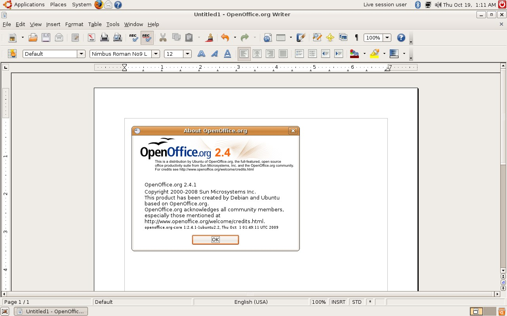
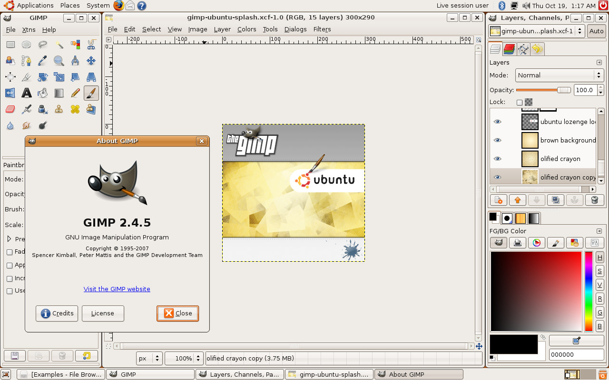
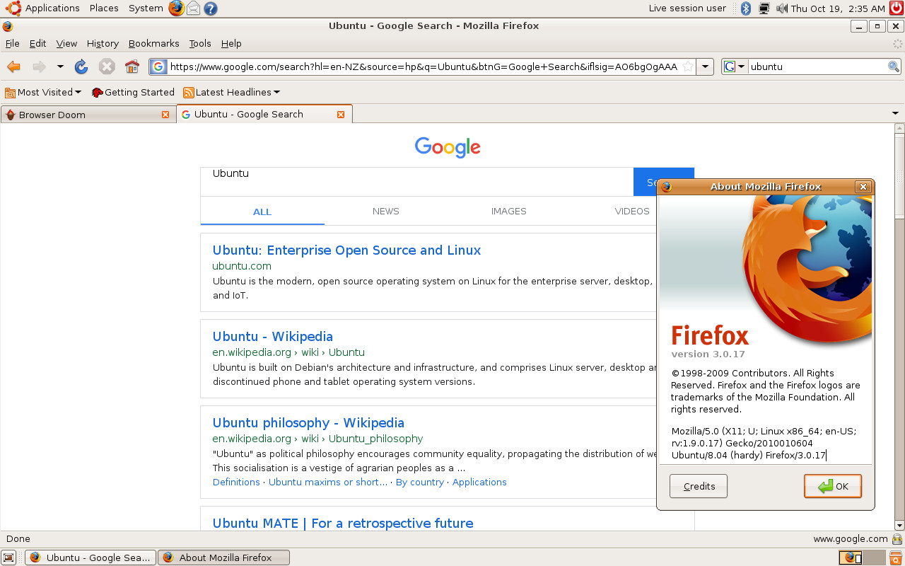

Ubuntu 8.04
2023-10-19
Back in the days when new versions of Ubuntu were being released, you can actually request an installation CD to be sent to you, and Canonical would do so free of charge. Recently while sorting some old stuff out, I have found such a CD, it was for Ubuntu 8.04 (Hardy Heron). So for fun I booted it up, and here are some obligated photos and screenshots.

Only needs 384MB of RAM. 👴

Ubuntu has a clear focus on the user and usability - it should Just Work.
That's arguably still true to this day, at least when compared to vanilla Gnome.



Pretty surprised to see Google automatically loads a version of itself that works in such an old version of Firefox, while others like Bing and DuckDuckGo would just straight up refused to load.